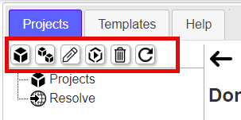
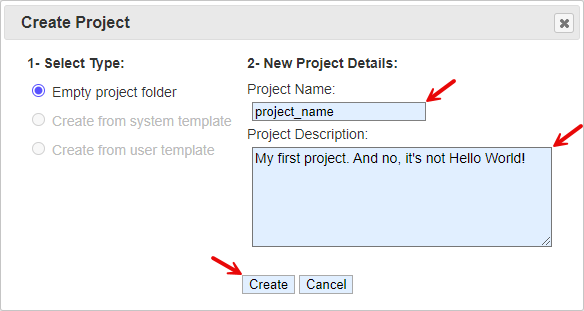
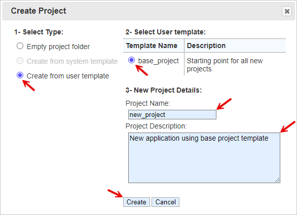
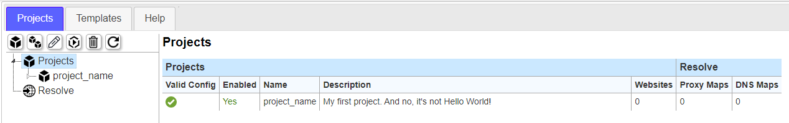

Starting a New Project
The toolbar is at the top of the navigation list for manaagement of projects.

1- Create a new project, click the in the top menu bar to begin.
2- When first building a project on a new system, the 'Create from system or user template' will be grayed out. These are available when there are project templates that can be used to start from. Fill in the 'Project Name' with a desired name. The 'Project Description' is optional. This name will become the project folder name in the 'web_source' folder. Project names are limited to alphanumeric, dot '.', dash '-', and underscore '_' character and in lower case to ensure no filesystem problems occur. Windows and Linux/UNIX system treat lower case and upper case differently. In Linux/UNIX systems, folders and files by the same name with upper and lower case letters are different folders or files. In windows, upper and lower case letters will resolve to the same folder or file. This can be dangerous when working on source code on differnt platforms; especially when copying code from Windows to Linux/UNIX and vice versa.

When there are project templates that are available, you can select the 'Create from system template' or 'Create from user template' radio options. Select the project template from the list and fill out the 'Project Name'. The 'Project Description' is optional.

3- When the project is created, the project will show up in the Projects panel. The table shows an information summary about the projects that exist or you have access to. The table columns describe the following:
- Projects - Valid Config - is an indicator that the configuration file does not have any issues. The project panel and website panel can be used to indicate what problems exist and tools to help fix them.
- Projects - Enabled - a project can be enabled or disabled which means any Proxy or DNS FQDN mapping will be turned on or off. This can be toggled if there is an intention to prevent website access.
- Projects - Name - the project names given to projects (folder names in 'web_source')
- Projects - Description - Project descriptions
- Projects - Websites - The number of websites in the project that are created
- Resolve - Proxy Maps - The number of mapping configurations resolving to websits (managed in 'Resolve' menu item)
- Resolve - DNS Maps - The number of mapping configurations resolving to websits (managed in 'Resolve' menu item)
